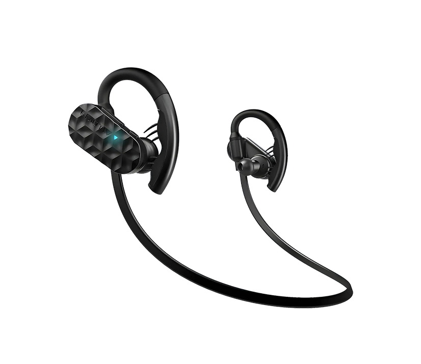

Imagina...
Imagina que quieres que te cuente una historia. Nos sentamos en un cómodo salón y me pides que te cuente un relato de aventuras, de detectives o de misterio. Nos servimos un café y, antes de comenzar, te explico que tengo una historia increíble con 3 protagonistas: un detective, un asesino y una chica. Te pido que elijas uno de ellos para recorrer la historia. Tú eliges. Yo, después, levanto la mano y una leve melodía de misterio comienza a sonar. Te miro a los ojos y te digo:
Voy a contarte la historia que tú quieres, pero no es la historia que tú esperas.
Me miras confuso, esbozas una sonrisa y comienzo.
Puedo Leerte la Mente y Sentir lo que Sientes...
Ahora imagina que tengo el poder de leerte la mente. Puedo sentir el latido de tu corazón, cuando se acelera o cuando está en calma. Siento cuando estás tenso, intrigado o nervioso; cuando lees más rápido... Siento cuando un personaje te gusta o disgusta, cuando una escena te resulta angustiosa, o cuando un beso te emociona. De forma mágica, en cada una de esas reacciones y en armonía con mis palabras, la melodía se acompasa, los efectos sonoros resuenan y te ves inmerso en una Experiencia Increíble.
Imagina que percibo, evalúo e interpreto cada una de las emociones que tu cuerpo experimenta al escuchar mi historia, y tengo la capacidad creativa suficiente para adaptar la historia y convertirla en Tu Historia. Cada vez te conozco mejor. Entiendo tus emociones y las aprovecho para continuar por el camino que menos te esperas pero que, al final, más te gustará.
Charlar, Vivir, Sumergirte en la Historia
Y puede que en algún momento hable contigo, que charlemos sobre la historia y me cuentes tus emociones para seguir adaptando el relato. Pero cuidado, esas preguntas pueden ser un engaño. No es un simple "Elige tu propia aventura", porque a veces tu decisión no dará como resultado lo que tú esperabas... mi objetivo es provocarte emociones de todo tipo.
De pronto, en mitad de una persecución, eres el protagonista de una escena de cine. Corres, otros te persiguen, el ruido de las balas te sobrecoge... O en mitad de un paisaje, te ves en el centro de una imagen inmersiva que ha transformado mis palabras en una realidad visual. La música acompaña a tu ritmo del corazón, a tus nervios, a tu alegría... va al compás de tus latidos.
Quiero sorprenderte, frustrarte, buscar el suspense o la intriga. No soy un mero relator, soy el creador de la historia que realmente quieres sentir. Lo que quiero es que al final me digas: "es la mejor historia que me han contado nunca".
Ahora, dejemos de imaginar. Todo esto puede hacerse realidad.
Año 2000. La Idea.
Con la incertidumbre del cambio de siglo, rondaba por mi cabeza la idea de una novela futurista. Influenciado por Bradbury y Orwell, me pregunté: ¿Y los libros? ¿Y la literatura? ¿Cómo serían dentro de 400 años?
Mi ejercicio de proyección me llevó al año 2400. Imaginé una especie de tablet avanzada, una conexión neuronal y una historia que pudiera adaptarse en función de las emociones y pensamientos del lector. Esto me llevó a un punto crítico: ¿cómo podría una historia ser única para cada lector? Me acordé de los libros de "Elige tu propia aventura", pero mi idea quería ir más allá.
Año 2003. La Inspiración.
Los puntos de decisión del lector no se verían, serían invisibles. Gracias a una "Conexión Neuronal", la plataforma percibiría las emociones y reacciones del lector y, sin que fuera consciente, enlazaría con la opción programada para esas emociones. La historia sería gigantesca: una novela que podrías leer y releer, y nunca vivirla de la misma forma.
Así surgieron dos términos: El SelBook, la plataforma capaz de soportar la historia, y el Stringbook, la historia en sí, con su infinidad de caminos.
Año 2012. La Solución.
En 2012, una empresa llamada Emotiv lanzó unos cascos capaces de reconocer emociones y reacciones fisiológicas. Ahí estaba, la Conexión Neuronal que había imaginado hacía 12 años. Esto multiplicó mi imaginación: ¿y si los libros tuvieran BSO adaptativa? ¿Y si tuvieran efectos sonoros? ¿Y si creamos vídeos que representen las escenas? La tecnología existente parecía frenar el sueño, pero sabía que era Posible.
Año 2023. La Inteligencia Artificial.
Ya casi me había rendido cuando a principios de 2023 escuché hablar de ChatGPT. Sí, sabía de la IA, pero era algo de "un futuro...".
En Febrero de 2023 tuve mi primera charla con ChatGPT. En Marzo descubrí Midjourney. Ese mismo mes supe de Runway ML. Antes de que acabara marzo, saqué el Proyecto Selbook, lo puse sobre la mesa y lo tuve claro. Ya existía toda la tecnología necesaria:
El Soporte
Una tablet, Gafas de realidad mixta, etc.

La Conexión Neuronal
Dispositivos BIC-EGG como los de Emotiv o NeuroSky.
Procesamiento y Generación
La Inteligencia Artificial para datos y contenidos instantáneos.
Había llegado el momento. Ha llegado.